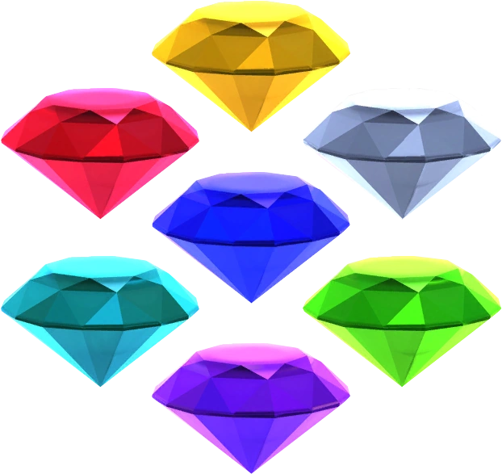

Oque São?
As 7 Esmeraldas do Caos, são 7 esmeraldas de 7 cores diferentes: Verde, azul escuro, azul claro, vermelho, prata, rosa e amarelo. Elas contém uma fonte de poder muito grande, e quando são juntas, podem fazer uma coisa ser a mais forte do mundo, e invencível. Alguns personagens, podem se transformar em Super Forma, quando as junta, como o Sonic, que pode se transformar no Super Sonic. As 7 esmeraldas do caos não tem dono fixo.
Cada esmeralda tem o poder de criar um universo e dão a quem possui um poderes inimagináveis. Quando juntas elas conseguem criar 7 universos inteiros ou mais, e dão ao Usuário que possa ter a habilidade de se transformar na forma "Super".
